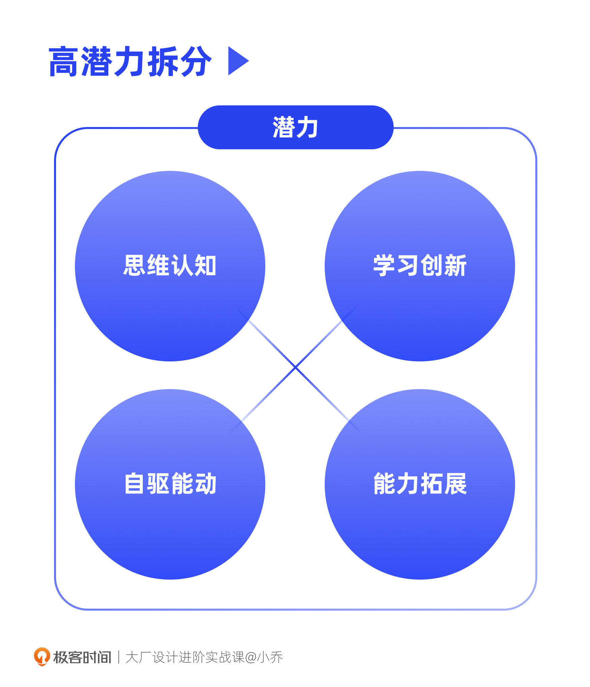
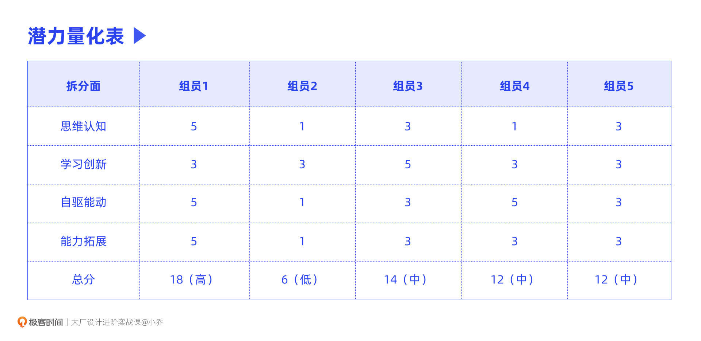
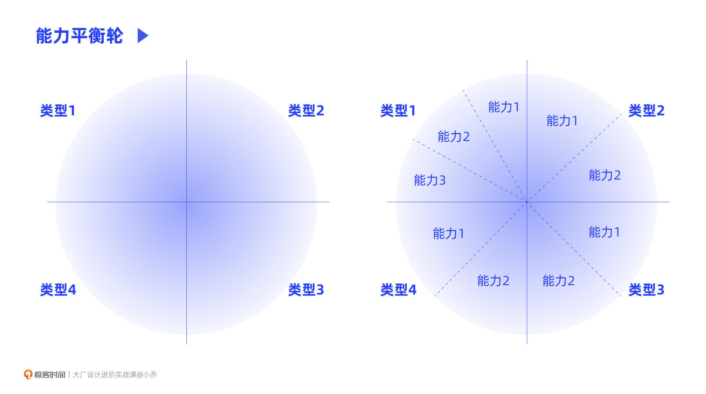
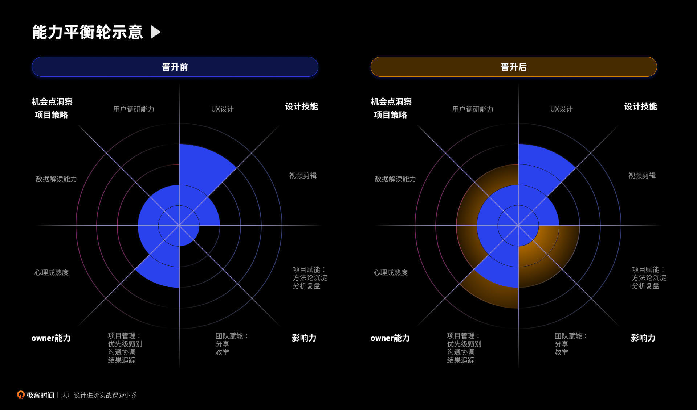
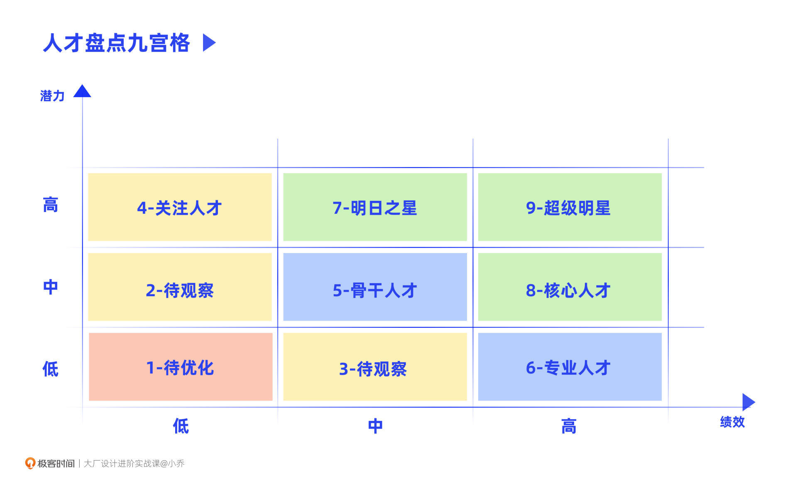

- 00 开篇词 升维思考，是设计师有效成长的第一步.md.html
- 01 业务周期：0-1-10-100-N的发展策略.md.html
- 02 商战模式：如何在商业竞争下突出重围？.md.html
- 03 市场洞察：如何找寻差异化撬动支点？.md.html
- 04 用户洞察：不懂用研的设计师不是好职场人.md.html
- 05 用户画像：是形式主义还是真的有效？.md.html
- 06 用户旅程：挖掘不同用户的核心机会点.md.html
- 07 职场晋升：看懂晋升的“游戏规则”.md.html
- 08 设计价值升级：五层进阶突破成长.md.html
- 09 基础价值 核心三原力：如何将需求转化为设计稿？.md.html
- 10 基础价值 第一性原理：从问题本质解决问题.md.html
- 11 基础价值 设计复盘：只是量化设计结果吗？.md.html
- 12 二级价值 负向网兜：如何全面发现负向问题？.md.html
- 13 二级价值 设计自驱：如何做好项目Owner？.md.html
- 14 二级价值 自驱合作：如何反内卷处理合作关系？.md.html
- 15 三级价值 增长误区：思维惯性陷阱和虚荣数据.md.html
- 16 三级价值 用户增长历程：AARRR是万能的吗？.md.html
- 17 三级价值 产品增长：如何做好产品创新？.md.html
- 18 三级价值 运营增长：如何自驱营销活动和投放？.md.html
- 19 三级价值 品牌增长 抢占心智，赢得人心红利.md.html
- 20 三级价值 增长实操：如何“步步为营”推动落地？.md.html
- 21 四级价值 L型赋能：让T型人才发挥更大价值.md.html
- 22 四级价值 “网状对比”解决共性痛点.md.html
- 23 五级价值 商业画布：设计师可以担任业务方吗？.md.html
- 24 五级价值 共创洞察：如何做好一次完善的workshop？.md.html
- 25 五级价值 领导力觉醒：写给新晋管理者.md.html
- 26 工作选择（上）：2B or 2C设计师？如何规划领域？.md.html
- 27 工作选择（下）：大厂 or 小厂？如何选择赛道？.md.html
- 28 人才地图：认知自我，成为高潜力人才.md.html
- 29 成长历程：如何从设计小白成长为团队负责人？.md.html
- 30 冰山模型：如何成为让面试官欣赏的“面霸”？.md.html
- 31 作品集指导：什么是面试官喜欢的作品集？.md.html
- 用户故事 什么是职场设计师进阶的正确姿势？.md.html
- 结束语 突破自我，成人达己.md.html
- 捐赠
28 人才地图：认知自我，成为高潜力人才
你好，我是小乔。
我们在前面两节课中，一起了解了行业的变化和值得我们加入的赛道，也学会了选择好赛道和好工作的方法。这节课，我们就要从“外观”转变为“内省”，看看自己的能力定位。
今天我们会讲解3种评估能力的模型工具。如果你已经是团队leader，这些模型可以帮助你搭建更健康的团队；如果你是团队中的个人贡献者，这些模型可以帮助你分析自我长短板和成长方向，也能够让你获得上层思维，了解管理者们都是如何部署团队的。
高潜力是在说什么？
我们常常会在管理者口中听到“高潜”这个词，在各个大厂的团队绩效review中，各级别的leader们也都会评估每位同学的潜力情况，部署好每位同学在团队中的定位。
我们在每次绩效季收到的绩效结果，是企业可以显性传达给每位同学的内容，不过，还有许多内容是不会传达给大家的，只有你上面的几层leader和HR之间是透明的。
所以，在大家不知情的情况下，每位同学其实都在leader们的观察辐射范围内。哪些同学积极主动，哪些同学偷懒摆烂，在系统里都有相应的量化打分。就像我们推动落地项目一样，项目规划需要有量化的目标指标，项目复盘需要有量化的价值结果，管理团队也需要清楚每一位同学在各个方面的能力值。
潜力代表着员工的未来长期价值，高潜力的同学往往能够超出预期，带来更大的团队价值。而低潜力的同学，在团队HC紧缩，需要“去肥增瘦”时，往往就是被淘汰的对象。因此，提升自己的潜力，对我们的成长和长期发展都有巨大帮助。
我们先来看看潜力一般包含哪些方面。不同公司对于潜力的评估也许会有出入，但大致要求类似。潜力一般可以拆分为4个方面：思维认知、学习创新、自驱能动、能力拓展。

思维认知
我们全篇课程一直在强调升维认知，设计师需要懂业务、懂用户、懂商业，才能更好地做好设计工作和更高价值的项目。有些同学还在不以为然地认为这些是产品经理的工作，这样的想法其实是非常危险的，说明我们不清楚行业对设计师的要求，也尚且不属于高潜力人才范畴。
思维认知高的表现，是具备全局意识，可以系统性地思考问题和发现机会点；思维认知低的表现是思维较为单一，仅能理解日常的简单工作，难以与其他职能的同学进行更深入的业务沟通。还记得我们讲过每个级别对应的能力要求吗？从P7开始，系统性思维就是必备能力，它可以让我们将散点的需求整合成线和面来思考问题。
比如P5的设计师在做banner，这是散点；P6的设计师在做简单的独立项目，这是线；而从P7开始，就需要横向将许多点和线连成面，组合成一个大项目，并体系化地规划全案；从P8开始，就需要将系统思维进一步提升，具备行业意识。
学习创新
学习创新能力高的表现，是对新知识和新方法可以快速上手，根据一些现象举一反三，挖掘自身业务可以发展的机会点。如果你在看了我们这套课程之后，可以在现有工作中迅速找寻机会，将方法运用在实战中，就是学习创新能力高的表现。而学习创新能力低的表现，就是很少主动学习，也较难吸收新知识，持续困顿于自己过往的经验。
我们来举个实际案例，某知名小厂的设计总监，曾经和我抱怨过他现在的团队。他曾经在某家大厂，团队同学的学习上手和举一反三的能力都很强，但到了现在的公司，下面同学却是推一下动一下的状态。他经常会把竞品的更新动态发给下属看，但下属们看完没有任何联想能力和创新能力，也不理解为什么此时此刻竞品要做这个，只是生搬硬套地把相关功能也做在自己的产品上，不动脑筋，这让他非常抓狂崩溃。
相信你已经能感受到，对于管理者来说，是多么渴望团队内有学习创新能力强的同学，否则就会有对牛弹琴的负面感受，不管多么尽力都带不动；而对团队同学来说，难以吸收知识也是较为致命的，因为学习能力强的同学正在以翻倍的速度进步，学习能力差的同学却还在原地踏步，这样就会导致强者更强、弱者更弱的两极分化，最终学习能力差的同学只能被迫汰换。
自驱能动
自驱意识反应了我们的好奇心、探索欲、进取心、好胜心，更反映了我们不满足于现状的心态，说得简单一些，就是许多公司会说的“要性”。要性高的同学会自我学习，自我找寻机会，自我提升，而不会像我那位总监朋友所抱怨的，推一下动一下。国内一些有生命力的大厂，对于人才的要求如果是100分，那自驱意识强的同学，往往对自己的要求是达到120分。
自驱能动性低的同学往往对自我要求不高，以及格为目标，也不愿意承担更多的工作，更不会主动找寻机会点创造更大价值，也就是我们常说的“摆烂”。
我们曾经讲过Netflix的人才管理，如果员工的表现只是合格，就会遭遇淘汰，因为公司只想留下优秀的人。他们用最高的薪资，保有最高的人才密度，推动公司极速成长。
虽然国内大厂并不会这么极端，但同样会鼓励员工打破边界，让有能力、有热情的同学得到更多机会，成长更加迅速，从而让公司形成飞轮效应。自驱意识差的同学会对整个团队的士气有负面影响，组织为了对其他同学负责，提供更好的成长环境，表现低的同学往往也是汰换人选。
能力拓展
能力拓展的要求，类似于我们之前讲过的T型人才。能力拓展表现高的同学，往往能力全面，在扎实的核心能力上可以更深、更广地拓展，承接多样的挑战。
比如作为一名UX设计师，在收到运营活动需求时，也可以做得好创意设计；再比如一直做线上界面的设计师，业务现在要求做线下店的设计，也可以迅速学习线下设计的知识进行落地，这些就是能力拓展表现高。
能力拓展表现低，就是长期困于现有水平，在团队给了时间和辅导后依然没有显著提升，职场成长的天花板也较低。
还记得我们讲过的能力圈模型吗？对于能力拓展较弱的同学，首先应该提升认知，不断扩大自己的能力圈范围，再挑战自己做舒适圈以外的项目，一点点加深难度，试探自己的能力圈边界，这样就可以将自己的能力拉伸了。成长迅速的同学，往往是勇往直前的，不停给予自己肌肉撕裂式成长的机会。
潜力量化表
在了解了关于高潜力的4个方面后，我们可以将这4个方面列成一个表格，并完成打分，这就是我们要讲的第一个工具——潜力量化表。每家公司拆分的数量不同，也许会将某一方面拆分成多个，让分类更细致；也许会有其他维度的添加，比如员工在离职或性格上的风险程度等。
下图中，我们以上述潜力的这4个方面为例，高潜力是5分，中等潜力是3分，低潜力是1分。当得分≥15分，潜力为高；9≤得分<15分，潜力为中；得分分，潜力为低。由总分可知，组员1是高潜力的同学，组员2是低潜力的同学。

在绩效review时，leader们会对这4个方面进行打分评估，最终得出潜力值总分。所以，谁在团队内潜力高，谁潜力低，其实在leader们和HR心里都是清清楚楚、明明白白的。我们如果想要成为高潜力人才，就要在这4个方面重点提升自己。
能力平衡轮
在了解了如何成为高潜力人才后，我们也需要清楚自己的长短板。这里，我想向你介绍一个实用的工具——能力平衡轮。
这个工具是我以前参加管理者培训时，公司邀请的培训专家分享的分析方法。在我制定团队同学的发展规划时，会高频使用到它。
首先，你可以主动问你的leader，目前部门对你这个级别的设计师，有哪几大方面的要求。你可以画一个圆，然后将几大类要求像分蛋糕一样切分出来，在每一类的要求内再细分出更多的能力要求。
需要注意的是，能力平衡轮是针对我们每个人的定制工具，因此你特有的优点或者缺点，也需要在图中划分出来。比如你可能有点玻璃心，内心非常敏感，项目没有做好，可能会有一些过度反应，那就需要将皮实程度、抗打击程度、心理成熟度之类的能力单独标注出来。

在每一个细分能力上，用0-5分对自己进行能力的量化，这样就会轻松地看出自己的长短板。通常没有明显的短板，在企业中的状态会更为舒适。同时，我们也要积极培养自己的长板。我们曾经讲过人才的职业标签，要让他人对你有更高维度的标签，就是通过长板体现的。
下图是我团队一个同学的能力平衡轮，这是他晋升前后的能力对比图，我们可以看到明显的成长。

你可以拿着自己的能力平衡轮，主动找leader讨论近半年或一年，他对你的培养规划。一方面可以体现你的主动自驱性，让leader更重视你；另一方面，leader也会对自己制定的规划负责，给你安排相应的项目机会，从而让你更快晋升。
人才盘点九宫格
当我们分析完自己的长短板之后，也可以横向看看自己在团队内的定位，这就是我们今天这节课的第3个工具——人才盘点九宫格。
我们曾经在设计价值升级一课中讲过，打绩效和晋升都是“相对论”，只有自己成为团队内的头部人才，才是高绩效和晋升提名的人选。
其实在leader和HR的手中，会有一张九宫格，团队内的每位同学都在相应的位置上分布着。下图中我们可以看到，横轴是绩效，纵轴是潜力，根据这两个维度的高低之分，可以划分出9个格子，分别对应不同类型的人才。

我们从左往右看，处于红色区域的低潜力低绩效的同学会被淘汰，黄色区域的同学会给一定时间进行培养，如果到期后依然无法达成组织要求，也同样会进行汰换。蓝色和绿色区域是安全区，处于蓝色区域的同学，是组织内的核心骨干，承接着大部分的普通项目，处于绿色区域的同学是头部成员，承接着难度较大、有挑战的项目，往往也是能为团队争取到更大价值的项目。
通常健康的团队分布，红色和黄色区域的成员较少或没有，同时会有20%左右的同学处于绿色区域，剩下的大部分同学处于蓝色区域。
我们可以横向对比团队内其他同学的情况，预估出自己的定位。如果想要得到高绩效，取得快速晋升，就要让自己加速成长，成为那20%的头部人才。
今日小结
今天，我们一起学习了3个非常实用的工具，可以帮助我们分析自身能力、制定成长规划，分别是潜力量化表、能力平衡轮和人才盘点九宫格。
它们不仅是leader和HR用来盘点团队健康程度的模型工具，也同样对我们认知自己有着巨大作用，因为认知自我是进步的前提。
学完这节课，相信聪明的你已经明白，想要得到话语权，争取到晋升涨薪的机会，获得主管的重视，就要成为团队内的前20%。正如我们之前讲过的“贵人”理论，没有平白无故的贵人，贵人是需要靠自己的能力吸引的。
互动时刻
用我们今天所学的3个工具来复盘一下自己，你是高潜力的人才吗？你的长短板是什么，你打算发展什么能力作为长板呢？你在团队内处于九宫格中的哪个区域呢？
欢迎把你的经历和思考在留言区分享出来，与我和其他同学一起探讨。我们建了一个读者交流群，欢迎你的加入！如果你觉得有所收获，也欢迎把文章分享给你的朋友一起学习。我们下节课见。
© 2019 - 2023 Liangliang Lee. Powered by gin and hexo-theme-book.